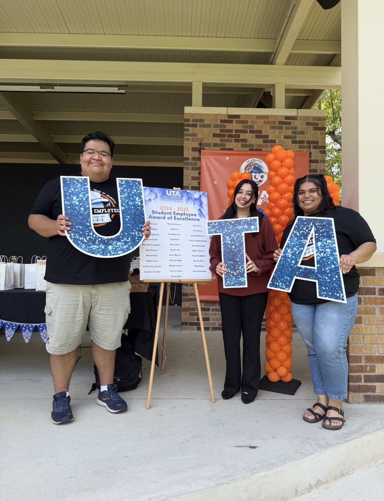

Marketing Assistant
UTA Career Development Center
- Manage 48+ projects on SharePoint, tracking drafts, approvals, and postings to ensure timely completion.
- Analyze event attendance and marketing-channel data to evaluate promotional effectiveness and guide data-driven planning.
- Leverage AI tools to brainstorm flyer concepts, develop caption ideas, and refine promotional messaging.
- Collaborate with cross-functional teams to organize and promote events, helping improve event outcomes and attendance.